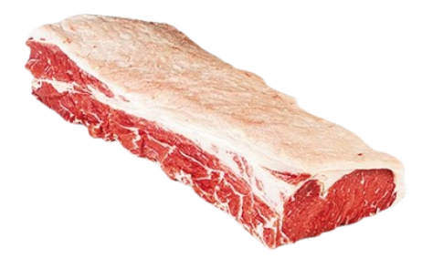

Mapa CarneCerta
Classico premium de grelha e bife
O contra-file concentra maciez alta, gordura equilibrada e acabamento perfeito para fogo direto.

Ideal para • churrasco • bife • grelha
Maciez
5/5
Alta
Gordura
3/5
Equilibrada
Sabor
4/5
Marcante
Abrir recomendador inteligente
Contra-file
Um dos cortes mais desejados para quem quer sabor intenso com boa maciez e resposta rápida no preparo.
O contra-file funciona muito bem em steaks altos, bifes grelhados e churrasco. A camada de gordura ajuda a manter suculencia e reforca a identidade do corte em fogo alto.
Fogo alto
Steaks e bifes
Suculencia equilibrada
4.9
Favorito para grelha
Excelente escolha para churrasco e bifes altos, principalmente quando a proposta e destaque de sabor com textura mais nobre.
Ideal para
Dica do açougueiro IA
Deixe a gordura dourar primeiro para proteger a carne do ressecamento e depois finalize o ponto no lado da proteina.